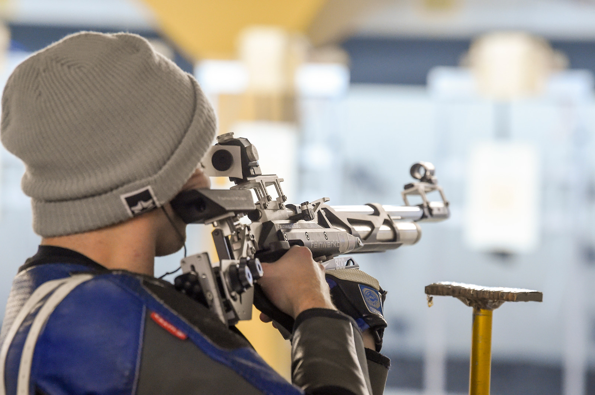

Academics

I am currently a senior at Wofford college pursuing a bachelor's degree in computer science. Throughout my process at wofford college I have had many unique experiences and have dabbled in many different subjects. Although, going into college I knew my passions were in computer science.
Although my academic career wasn’t just learning subject matter. I was also involved in quite a few extracurricular activities. I came to Wofford on a scholarship for competitive riflery. I have been competing on this team since my first day at wofford. It has made my course load a bit more strenuous due to the fact our sport is both a fall and spring sport. Although, I have strived for achievement in my sport and was the standing captain for the past year and a half.
In addition to this, I also decided to pursue greek life at Wofford. I joined Pi Kappa Phi my second semester. I have also took strides to help my fraternity in any way I could. My positions in my fraternity have been, Vice President of Zeta chapter sophomore and junior year, and Warden my junior and senior year. I have helped out in many philanthropy events because I am a strong supporter for what our philanthropy stands for. Briefly grazing over that, our philanthropy is The Ability Experience which helps people with mental and physical disabilities.
Lastly I have been a member of the WoCoders coding team. I attend the practices and help solve our practice problems, but my Rifle competition schedule generally interferes with the dates for coding competitions.
Overall, my experience at Wofford College has been enlightening, and I have gained many friendships, and some amazing mentors.